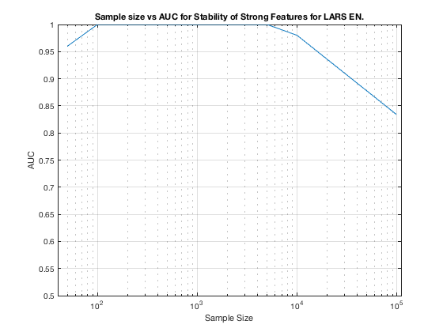

TIE-Net-Reduced1. Summary. Elastic Net.
summary_stability_type("RedNet", 3)
TOTAL COUNTS: Total=35, Strong=5, Weak=26, Irrelevant=4
Figure 61. Stability as a predictor for Strong Features for Elastic Net on TIE-Net-Reduced1.
_____________________________________________________________________________________________

Table 61. Breakdown of Stability by Feature Type for Elastic Net.
__________________________________________________________________
(1) Number Features Repeat (n_fs_rep): number of unique features that were selected in a repeat
(2) Number Features Fold (n_fs_fold): number of unique features that were selected in a fold
(3) Feature Stability ~ Feature Selection Frequency
Sample_Size All_n_fs_rep All_n_fs_fold All_Stability
___________ _____________________ _____________________ ___________________
' 50 ' ' 15.460 +/- 0.103 ' ' 4.324 +/- 0.033 ' ' 0.124 +/- 0.110 '
' 100 ' ' 20.580 +/- 0.099 ' ' 6.606 +/- 0.043 ' ' 0.189 +/- 0.140 '
' 200 ' ' 21.400 +/- 0.091 ' ' 6.976 +/- 0.047 ' ' 0.199 +/- 0.174 '
' 300 ' ' 20.780 +/- 0.082 ' ' 6.928 +/- 0.045 ' ' 0.198 +/- 0.192 '
' 400 ' ' 21.320 +/- 0.081 ' ' 7.614 +/- 0.037 ' ' 0.218 +/- 0.205 '
' 500 ' ' 20.800 +/- 0.081 ' ' 7.606 +/- 0.043 ' ' 0.217 +/- 0.216 '
' 1000 ' ' 22.480 +/- 0.070 ' ' 9.020 +/- 0.033 ' ' 0.258 +/- 0.249 '
' 2000 ' ' 21.480 +/- 0.079 ' ' 9.360 +/- 0.032 ' ' 0.267 +/- 0.278 '
' 5000 ' ' 21.740 +/- 0.062 ' ' 10.818 +/- 0.031 ' ' 0.309 +/- 0.312 '
' 10000 ' ' 22.480 +/- 0.069 ' ' 11.624 +/- 0.038 ' ' 0.332 +/- 0.305 '
' 100000 ' ' 20.740 +/- 0.062 ' ' 11.926 +/- 0.032 ' ' 0.341 +/- 0.293 '
Sample_Size Strong_n_fs_rep Strong_n_fs_fold Strong_Stability
___________ _____________________ _____________________ ___________________
' 50 ' ' 3.640 +/- 0.020 ' ' 1.610 +/- 0.012 ' ' 0.322 +/- 0.184 '
' 100 ' ' 4.280 +/- 0.019 ' ' 2.336 +/- 0.012 ' ' 0.467 +/- 0.195 '
' 200 ' ' 4.600 +/- 0.011 ' ' 2.748 +/- 0.009 ' ' 0.550 +/- 0.241 '
' 300 ' ' 4.820 +/- 0.008 ' ' 2.986 +/- 0.012 ' ' 0.597 +/- 0.237 '
' 400 ' ' 4.900 +/- 0.006 ' ' 3.244 +/- 0.012 ' ' 0.649 +/- 0.204 '
' 500 ' ' 4.900 +/- 0.006 ' ' 3.320 +/- 0.012 ' ' 0.664 +/- 0.227 '
' 1000 ' ' 5.000 +/- 0.000 ' ' 3.916 +/- 0.010 ' ' 0.783 +/- 0.125 '
' 2000 ' ' 5.000 +/- 0.000 ' ' 4.336 +/- 0.009 ' ' 0.867 +/- 0.107 '
' 5000 ' ' 5.000 +/- 0.000 ' ' 4.830 +/- 0.004 ' ' 0.966 +/- 0.028 '
' 10000 ' ' 5.000 +/- 0.000 ' ' 4.980 +/- 0.001 ' ' 0.996 +/- 0.004 '
' 100000 ' ' 5.000 +/- 0.000 ' ' 5.000 +/- 0.000 ' ' 1.000 +/- 0.000 '
Sample_Size Weak_n_fs_rep Weak_n_fs_fold Weak_Stability
___________ _____________________ _____________________ ___________________
' 50 ' ' 10.320 +/- 0.088 ' ' 2.394 +/- 0.029 ' ' 0.092 +/- 0.040 '
' 100 ' ' 14.240 +/- 0.079 ' ' 3.728 +/- 0.033 ' ' 0.143 +/- 0.050 '
' 200 ' ' 14.540 +/- 0.074 ' ' 3.658 +/- 0.036 ' ' 0.141 +/- 0.055 '
' 300 ' ' 13.880 +/- 0.075 ' ' 3.488 +/- 0.035 ' ' 0.134 +/- 0.063 '
' 400 ' ' 14.500 +/- 0.069 ' ' 3.928 +/- 0.029 ' ' 0.151 +/- 0.081 '
' 500 ' ' 14.060 +/- 0.070 ' ' 3.830 +/- 0.031 ' ' 0.147 +/- 0.093 '
' 1000 ' ' 15.280 +/- 0.058 ' ' 4.602 +/- 0.025 ' ' 0.177 +/- 0.130 '
' 2000 ' ' 14.440 +/- 0.069 ' ' 4.522 +/- 0.022 ' ' 0.174 +/- 0.138 '
' 5000 ' ' 14.680 +/- 0.053 ' ' 5.442 +/- 0.027 ' ' 0.209 +/- 0.175 '
' 10000 ' ' 15.280 +/- 0.058 ' ' 5.942 +/- 0.035 ' ' 0.229 +/- 0.151 '
' 100000 ' ' 13.820 +/- 0.060 ' ' 6.124 +/- 0.031 ' ' 0.236 +/- 0.122 '
Sample_Size Irrelevant_n_fs_rep Irrelevant_n_fs_fold Irrelevant_Stability
___________ ___________________ ____________________ ____________________
' 50 ' ' 1.500 +/- 0.021 ' ' 0.320 +/- 0.006 ' ' 0.080 +/- 0.030 '
' 100 ' ' 2.060 +/- 0.020 ' ' 0.542 +/- 0.008 ' ' 0.136 +/- 0.028 '
' 200 ' ' 2.260 +/- 0.025 ' ' 0.570 +/- 0.009 ' ' 0.142 +/- 0.016 '
' 300 ' ' 2.080 +/- 0.019 ' ' 0.454 +/- 0.006 ' ' 0.114 +/- 0.023 '
' 400 ' ' 1.920 +/- 0.021 ' ' 0.442 +/- 0.007 ' ' 0.111 +/- 0.038 '
' 500 ' ' 1.840 +/- 0.023 ' ' 0.456 +/- 0.009 ' ' 0.114 +/- 0.011 '
' 1000 ' ' 2.200 +/- 0.021 ' ' 0.502 +/- 0.007 ' ' 0.126 +/- 0.015 '
' 2000 ' ' 2.040 +/- 0.019 ' ' 0.502 +/- 0.008 ' ' 0.126 +/- 0.005 '
' 5000 ' ' 2.060 +/- 0.021 ' ' 0.546 +/- 0.007 ' ' 0.137 +/- 0.019 '
' 10000 ' ' 2.200 +/- 0.018 ' ' 0.702 +/- 0.008 ' ' 0.176 +/- 0.058 '
' 100000 ' ' 1.920 +/- 0.020 ' ' 0.802 +/- 0.011 ' ' 0.201 +/- 0.042 '